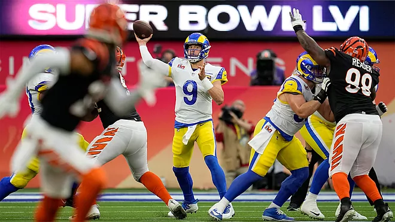

A Super Bowl LVI egy amerikai futballmérkőzés volt, amelyet a National Football League (NFL) 2021-es
szezonjának bajnokságáért játszottak. A National Football Conference (NFC) bajnoka, a Los Angeles Rams
23-20-ra legyőzte az American Football Conference (AFC) bajnokát, a Cincinnati Bengals csapatát. A
mérkőzést 2022. február 13-án játszották a kaliforniai Inglewoodban található SoFi Stadionban, a Rams
hazai stadionjában, ami a második egymást követő és összességében a második Super Bowl volt, amelyet egy
csapat a saját stadionjában játszott és nyert meg.
A mérkőzés rövid összefoglalója
A mérkőzésen háromszor változott a vezetés, és többnyire egygólos különbségen belül maradt. A Los
Angeles 13-10-re vezetett a félidőben, de a Bengals a harmadik negyed első két drive-jában zsinórban 10
pontot szerzett. A negyedik negyedben 20-16-os hátrányban a Rams egy touchdownt szerzett, így kevesebb
mint két perccel a vége előtt visszavette a vezetést, majd megállította a Cincinnati utolsó drive-ját. A
Super Bowl MVP-jének a Wide Receiver Cooper Kuppot választották, aki a Rams utolsó drive-jában egy
negyedik leindítást értékesített és a győztes touchdownt is megszerezte.
A Bengals nyerte az érmefeldobást és elhalasztotta a második félidőre; a Rams kapta meg a labdát a
kezdőrúgásnál. 163 A Cincinnati Trey Hendrickson sackelte Matthew Staffordot, ami a Los Angeles
puntjához vezetett. A Bengals a középpálya felé haladt, de a negyedik kísérletnél elakadtak, amikor
Ernest Jones leütötte Joe Burrow passzát Ja'Marr Chase-nek. A Los Angeles a saját 49 yardos vonalánál
vette át a labdát. Egy 3rd-and-4-et Stafford 20 yardos befejezéssel váltott Cooper Kuppra, majd a Rams a
következő játékban egy 4 yardos Henderson-rohanással bejutott a piros zónába. Két játékkal később jött a
meccs első pontja Stafford 17 yardos touchdown-passzával Odell Beckham Jr. felé. Mivel a Bengals nem
tudott azonnal válaszolni, a Bengals 3-and-outot produkált, Kevin Huber puntja pedig a Los Angeles 28
yardos vonalán landolt. A Rams hasonlóan eredménytelen volt a következő drive-jában, mivel egy delay of
game büntetés eltörölt egy öt yardos nyereséget az első kísérletnél, és Van Jefferson elkapása a
harmadik kísérletnél nem ért el first downt. Hekker puntját a Cincinnati 30 yardos vonalára vitték
vissza, ahol a Bengals megkezdte a következő sorozatát. A drive második játékában egy 46 yardos passz
Burrow-tól Chase-nek a Los Angeles 11 yardos vonaláig vitte a labdát, bár három egymást követő
befejezetlen passz miatt 29 yardos mezőnygólkísérletre kényszerültek, amit Evan McPherson értékesített,
így az állás 7-3 Rams. A touchback után a Kosok a saját 25 yardos vonalukon szerezték meg a labdát; az
első negyed vége előtt egyetlen játékot futottak, egy Akers futást egy yard veszteségért.
A második negyedet a Rams a saját 24 yardos vonalán 2-and-11-es állással kezdte. Egy sikertelen mélységi
passzt Staffordtól Kuppnak azonnal követett egy 35 yardos passz Beckhamnek és egy 25 yardos passz
Hendersonnak. A Cincinnati 16 yardos vonalánál a piros zónán belül Henderson öt yardot futott, mielőtt
Stafford Kuppnak passzolt egy 11 yardos touchdownt. Az extra pont sikertelen volt, mivel Hekker rosszul
kezelte a snapet, majd interceptiont dobott Germaine Prattnek, így a Rams 13-3-ra vezetett. Az ezt
követő kickoff touchback volt, a Bengals pedig 14 játékban 75 yardot haladt előre a labdával, Burrow 5/5
passzát 38 yardra teljesítette, míg Joe Mixon 6 alkalommal 26 yardot futott. Az utolsó játékban Mixon
fogadott egy dobást Burrow-tól, majd egy félhátvédpasszal Tee Higginsnek passzolt egy 6 yardos
touchdownért. Ezt követően újabb touchback következett, majd a Rams egy pár, összesen 19 yardos játékkal
kezdte meg drive-ját, amivel a saját 44 yardos vonaláig jutottak. Beckham Jr. térdsérülése után, amely a
mérkőzés hátralévő részére oldalra szorította, egy false start büntetés öt yardot hátráltatta őket. A
drive a Bengals 43 yardos vonalánál 3-and-14-nél ért véget, amikor Stafford lefelé tartó passzát Jessie
Bates elkapta az end zone-ban, amiért touchback lett. A Bengals a saját 10 yardos vonaluknál (egy
sportszerűtlen magatartásért járó büntetés miatt tíz yardot hátráltatták őket). A rövid drive
sikertelennek bizonyult, és 42 másodperccel a vége előtt puntoltak. A Rams egy még rövidebb drive-val
válaszolt, 26 másodperc alatt három- és egy outot produkáltak, majd visszapuntoltak a Cincinnatihez;
Burrow ezután térdelt le a félidő végén.

Matthew Stafford passzol a támadófala védelméből
Második félidő
A Cincinnati a második félidő első játékában megszerezte első vezetését, amikor Burrow a bal oldalvonal
közelében mély passzt adott Higginsnek, aki a védő Jalen Ramsey-vel keveredett össze. Közvetlenül a
labda érkezése előtt Ramsey elesett, így Higgins el tudta kapni a passzt, és 75 yardos touchdownt
szerezve az end zone-ba száguldott. A visszajátszások azt mutatták, hogy Higgins megfogta Ramsey
arcmaszkját az elkapás előtt, de nem dobtak büntető zászlót, és a touchdown állt, így a Bengals 17-13-ra
vezetett. 166. A Rams számára a dolgok gyorsan rosszabbra fordultak, mivel Stafford dobott egy passzt,
amely Ben Skowronek elkapó kezéről pattant le, és Chidobe Awuzie elkapta a Rams 32 yardos vonalánál. A
Cincinnati McPherson 38 yardos mezőnygóljával tudott tőkét kovácsolni; ezt kilenc yarddal visszatolták
az előző játékban Aaron Donald zsákolása után. Az immár hét ponttal vezető Bengals touchbacket rúgott.
Nem sokkal a drive után a Rams egy 3rd-and-8-at kapott, amit Stafford Henderson passzával 15 yardra
értékesítettek. Összességében a drive 11 játékot és 52 yardot tett meg, Stafford 4/5 passzát 44 yardra
teljesítette, mielőtt Matt Gay 41 yardos mezőnygóljával 20-16-ra alakult az állás 6:02 perccel a
harmadik negyed vége előtt. Négy egymást követő three-and-out következett, a Bengals 43 másodperccel a
negyed vége előtt puntolt, a Rams pedig egyetlen play-t futott, egy öt yardos Akers-rohammal a
Cincinnati 47 yardos vonaláig, mielőtt véget ért a harmadik negyed.
A negyedik negyedben a Rams három játékrész után puntolt, így a Bengals a saját 16 yardos vonalánál
kapta meg a labdát. Burrow 16 yardos passza Boydnak a második kísérletnél 16 yardot ért, de onnantól
kezdve a Cincinnati támadójátéka megrekedt, és egy felesleges durvasági büntetés a harmadik kísérletnél
4-and-29-nél puntot kényszerített, amit a Los Angeles 35 yardos vonalára vittek vissza. A Rams egy újabb
három-and-out után visszapuntolta a labdát, a Cincinnati pedig átvette a labdát, miután a punt a 16
yardos vonaluknál kiment a pályáról. Mixon 12 yardos futásával a drive első játékában first downt
szereztek, majd Burrow 3 yardos passzával Chris Evanshez újabb first downt értek el a 3-and-2-nél,
azonban a Cincinnati nem tudott újabb first downt szerezni, és három játékkal később 4-and-9-nél
puntoltak. A labdát a saját 21 yardos vonalukon kapva a Rams mindössze négy játék után 4-and-1-gyel
találta magát szemben, de Kupp 7 yardos futása egy end-aroundon egy first downt eredményezett. Három
játékkal később elérték a Bengals területét. Néhány játékkal később Stafford 22 yardos passzával Kuppnak
eljutottak a Bengals 24 yardos vonaláig, majd egy újabb Stafford-Kupp passzal jutottak el a piros
zónába, ezúttal 8 yardra. A kétperces figyelmeztetés után három befejezetlen passz következett, de a
linebacker Logan Wilson elleni holding büntetés miatt a Rams egy first downt szerzett. A következő játék
után (egy touchdownt töröltek a mindkét csapat ellen elkövetett kompenzáló büntetések) a Bengals
védőjét, Eli Apple-t a végzónában passzinterferenciáért lesték el, így az 1-es vonalról első és gólt
kaptak. Két játékkal később Stafford 1 yardos touchdown-passzt dobott Kuppnak, így a Rams 23-20-ra
vezetett, 1:25 volt hátra az órából. A Bengals visszakapta a labdát a saját 25 yardos vonalánál, és
gyorsan 26 yardot szerzett egy 17 yardos passzal Chase-nek, illetve egy 9 yardos elkapással Boydnak. Egy
befejezetlen passz után Donald és társa, Greg Gaines tackle-ezte Samaje Perine-t, így 4-and-1-es
álláshoz jutottak. A Bengals úgy döntött, hogy passzol a labdáért egy first downért, de Donald betakarta
Burrow-t, mielőtt az dobhatott volna. Még mindig sikerült megpróbálnia egy passzt adni Perine-nek,
miközben őt leteperték, de a labda éppen csak lemaradt, ami turnover on downs-t eredményezett, és
lehetővé tette LA számára, hogy az óra hátralévő részét egy quarterback kneel-lel futtassa le. 163 Kupp
lett a Super Bowl MVP-je, nyolc elkapással 92 yardot és két touchdownt szerzett, beleértve három
elkapást és egy touchdownt (valamint egy átvételt hét yardért) a Rams utolsó drive-jában.